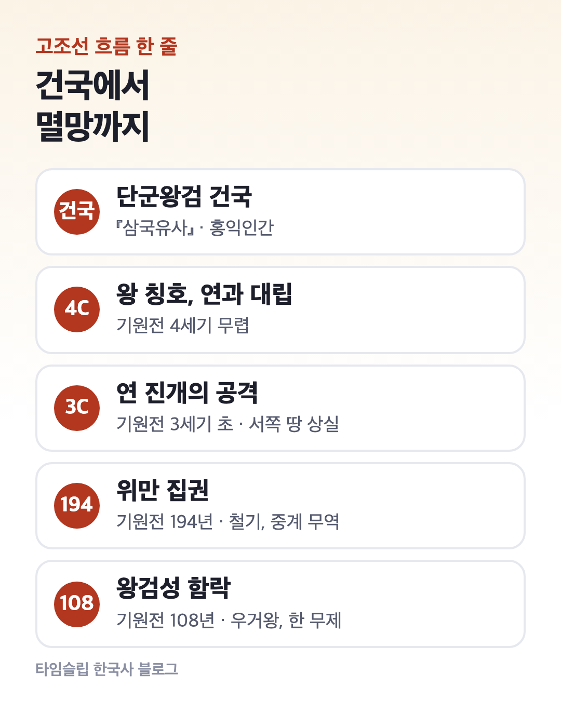
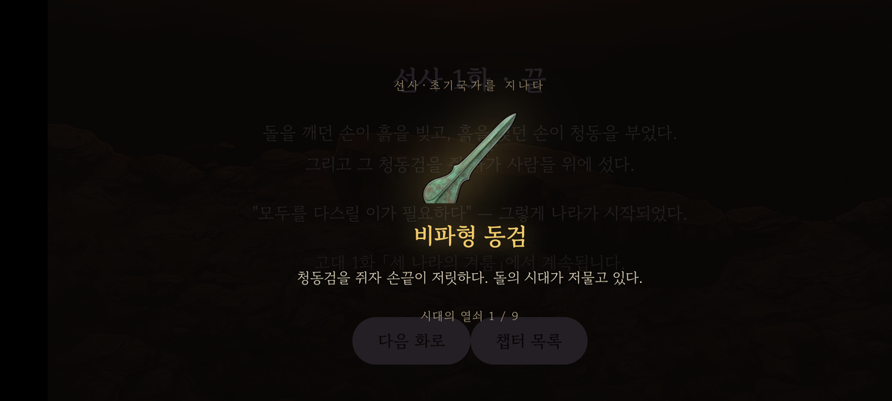
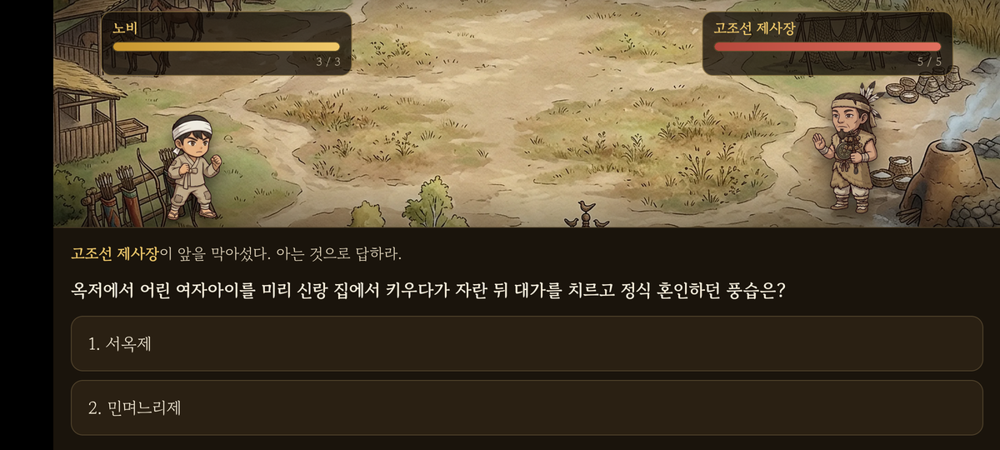

고조선 핵심 정리｜건국부터 멸망까지 한능검 단골 포인트
고조선은 우리 역사의 첫 국가이고, 한능검 심화에서는 “범금 8조”, “위만”, “우거왕” 같은 단어가 사료에 나오면 거의 고조선 문제입니다.
이 글에서는 고조선을 ① 건국 ② 성장 ③ 위만 조선 ④ 멸망 순서로 정리하고, ⑤ 범금 8조와 ⑥ 대표 유물, ⑦ 시험에 나오는 단서 단어를 모읍니다.

1. 건국 — 단군왕검 이야기
고조선 건국 이야기는 『삼국유사』(일연)에 처음 실려 있고, 『제왕운기』(이승휴)에도 나옵니다. 『동국통감』의 계산을 따르면 건국은 기원전 2333년이에요.
이야기 속 단어는 그 사회를 보여 주는 단서입니다.
- 환웅이 하늘에서 내려옴 → 하늘을 섬기는 집단이 이주해 옴
- 풍백·우사·운사 → 바람·비·구름 = 농사를 중시함
- 곰을 섬기는 부족과 결합 → 토착 세력과 연합
- 단군왕검 → 제사장(단군)과 정치 지도자(왕검)가 한 사람 = 제정일치
2. 성장 — 왕을 칭하고 연과 맞섬
고조선은 청동기 문화를 바탕으로 성장했습니다. 기원전 4세기 무렵에는 왕이라는 칭호를 쓰고 중국 연나라와 맞설 만큼 커졌어요.
부왕, 준왕 같은 왕이 왕위를 이었고 상, 대부, 장군 같은 관직도 두었습니다.
기원전 3세기 초에는 연나라 장수 진개의 공격을 받아 서쪽 땅을 크게 잃었습니다.
3. 위만 조선 — 철기와 중계 무역
중국 한나라 초기 혼란 속에 위만이 무리를 이끌고 고조선으로 왔습니다. 준왕은 위만에게 서쪽 변경을 지키게 했지만, 위만은 세력을 키워 기원전 194년 준왕을 몰아내고 왕이 됩니다. 쫓겨난 준왕은 남쪽으로 내려가 ‘한왕’을 칭했다고 전해져요.
위만이 들어올 때 상투를 틀고 조선 옷을 입었다는 기록이 있어서, 위만 이후에도 고조선을 이은 나라로 봅니다. 사료에 상투와 조선 옷이 나오면 위만입니다.
- 철기 문화를 본격적으로 받아들임
- 남쪽의 진과 중국 한 사이에서 중계 무역으로 이익을 얻음
4. 멸망 — 한 무제의 공격, 기원전 108년
중계 무역 이익을 둘러싸고 한나라와 갈등이 커지자 한 무제가 고조선을 공격합니다. 위만의 손자 우거왕 때 왕검성에서 1년 가까이 버텼지만, 지배층 내부가 분열하면서 기원전 108년 왕검성이 함락되었어요.
한은 고조선 옛 땅에 군현을 설치했습니다.
5. 범금 8조 — 지금은 3개 조항만 전해짐
고조선에는 8개 조항의 법(범금 8조)이 있었는데, 『한서』 지리지에 3개 조항이 전해집니다.
| 조항 | 알 수 있는 것 |
|---|---|
| 사람을 죽인 자는 바로 죽인다 | 생명을 중시함 |
| 남을 다치게 한 자는 곡식으로 갚는다 | 농경 사회, 노동력 중시 |
| 도둑질한 자는 노비로 삼는다 (용서받으려면 50만 전) | 사유 재산, 신분(노비), 화폐 사용 |
시험에서는 조항 자체보다 “이 법으로 알 수 있는 사회 모습”을 묻는 경우가 많아요. 오른쪽 열을 같이 기억하세요.
6. 고조선 범위를 보여 주는 유물

고조선의 세력 범위는 다음 유물이 함께 나오는 지역으로 짐작합니다.
- 비파형 동검 — 악기 비파를 닮은 청동 칼
- 탁자식(북방식) 고인돌 — 탁자처럼 굄돌 위에 덮개돌을 올린 무덤
- 미송리식 토기 — 양쪽에 손잡이가 달리고 목이 밖으로 벌어진 항아리
이 셋은 만주와 한반도 북부에 넓게 분포합니다. 청동기 시대에 고인돌 같은 큰 무덤을 만들 수 있었다는 것은 많은 사람을 부릴 수 있는 지배층이 있었다는 뜻이기도 해요.
7. 사료 단서 단어 정리
| 사료에 나오면 | 답 |
|---|---|
| 홍익인간 · 환웅 · 풍백 · 우사 · 운사 | 단군 건국 이야기 |
| 상 · 대부 · 장군 · 부왕 · 준왕 | 고조선 성장기 |
| 진개 | 연의 공격 (서쪽 땅 상실) |
| 상투 · 조선 옷 · 준왕을 몰아냄 | 위만 |
| 우거 · 왕검성 · 한 무제 | 멸망 (기원전 108년) |
| 범금 8조 · 50만 전 · 노비 | 고조선 사회 |
한 줄로 줄이면 “단군 건국 → 왕 칭호 → 진개 → 위만(철기·중계 무역) → 우거, 108년 멸망”입니다. 다음 글에서는 고조선 뒤에 등장한 여러 나라(부여, 고구려, 옥저, 동예, 삼한)를 정리할게요.
시험 구성은 한능검 심화 시험 구성 글에 있습니다.
8. 이야기로 따라가며 외우고 싶다면

타임슬립 한국사는 선사부터 현대까지 36개 이야기 속으로 들어가 인물과 대화하며 기출 문제를 푸는 게임입니다. 선사·초기국가 이야기는 비파형 동검 같은 유물을 모으고, 마지막에 고조선 제사장과 보스전을 치르며 끝나요.
출처: 우리역사넷(국사편찬위원회) · 국사편찬위원회 한국사능력검정시험
이 블로그는 ‘타임슬립 한국사’ 앱 운영자가 씁니다. 공식 자료와 대조해 정리했습니다.